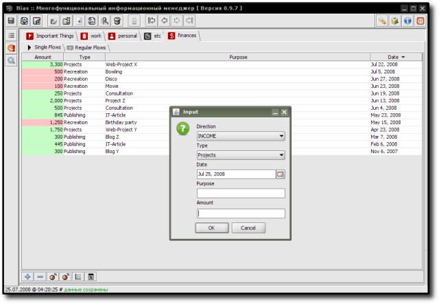
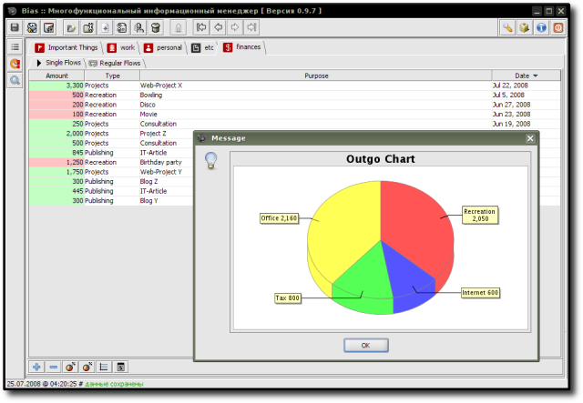
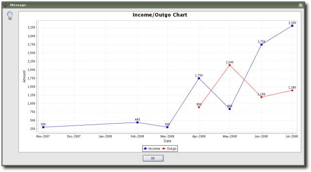

FinancialFlows - управление денежными потоками (+статистика).
Расширение предоставлено Р. Касьяненко, автором приложения Bias.
Расширение использует следующие библиотеки:
- JFreeChart - a free Java chart library that makes it easy to display professional quality charts in Java applications, provided by JFree.org - site of free software projects targetting the Java platform, owned and operated by David Gilbert and Thomas Morgner
- JCalendar - a Java date chooser bean for graphically picking a date provided by Kai Toedter.
Предварительный просмотр:


